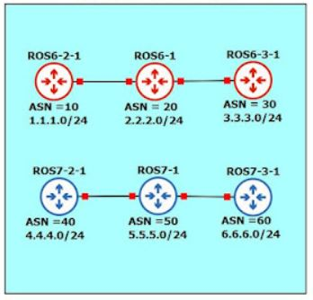

Membandingkan BGP Routing di MikroTik ROS6 dan 7
Topologi

Kebutuhan LAB:
- VirtualBox, GNS3 - untuk cara install dan confignya bisa copas link dibawah ini ke address bar
- https://www.youtube.com/watch?v=KhwcGyo55mc
- Atau kalian bisa liaht artikel lain di internet / AI
Materi BGP ini sebenarnya masuk dalam pembahasan tingkat lanjut
Untuk membahas materi BGP secara penuh di mikrotik bisa memakan waktu seminggu
Karena itu disini saya hanya membandingkan perbedaan setup BGP di ROS6 dan ROS7
dan saya akan menjelaskan poin poin dasar setup BGP
>DASAR SETTING BGP ~ DI VENDOR ROUTER APAPUN
- Set ASN dan router id
- Set BGP Peering
- Advertise BGP Networks
- Filtering BGP Networks
DALAM LAB INI KITA AKAN LAKUKAN HAL HAL INI
- - Config ASN dan router id
- - Config BGP Connection / Peering
- - Advertise Networks
- - Filtering Networks (Tolak active prefix 25, terima preifx 24)
- - Tidak ada filtering networks pada ASN 30 dan 60
GOALS~ YANG HARUSNYA KITA DAPAT SETELAH CONFIG
- - BGP Peering establish
- - Advertise networks berhasil
- - di Router ASN 10,20,40,50 hanya ada prefix dst-address 24
- - di Router ASN 30 dan 60 ada prefix dst-address 24 dan 25
- - bisa saling ping antara router BGP
Config BGP saya share di one drive dengan format pdf klik di siniuntuk download